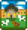

| Nombre |
Mapa |
Descripción |
Habilidad asociada |
 Granja Estándar Granja Estándar |
 |
- La mayor parte de este mapa es terreno agrícola, ideal para cultivos y animales.
- El número de casillas cultivables en este mapa es de 3427, con 235 casillas no cultivables pero construibles.
- El área rectangular contigua más grande es de 63 x 31 (1953) casillas.
|
 Agricultura. Agricultura. |
 Granja Fluvial Granja Fluvial |
 |
- La mayor parte de este mapa es agua. La Pesca es viable en esta granja:
- El 70% de las veces, los jugadores pueden pescar los mismos Peces que se encuentran en el río de Pueblo Pelícano.
- El 30% de las veces, los jugadores pueden pescar los mismos peces que se encuentran en el río y estanque del Bosque Tizón.
- A diferencia del resto de mapas de granjas, en este mapa se generan Burbujas aleatorias.
- El agua reduce bastante el área de tierra cultivable.
- El número de casillas cultivables en este mapa es de 1578, con 516 casillas no cultivables pero construibles.
|
 Pesca. Pesca. |
 Granja Forestal Granja Forestal |
 |
- El borde de la granja está formado por árboles y follaje, al igual que en el Bosque secreto.
- En este mapa se pueden encontrar muchos arbustos, incluidos los de bayas.
- Los claros al oeste dan lugar a 8 tocones grandes renovables (madera noble), objetos recolectables estacionales y Hierbajos únicos que siempre dejan caer Semillas variadas. Los posibles objetos de recolección son: Primavera: Diente de león, Puerro, Colmenilla y Rábano silvestre (25% de probabilidad cada uno). Verano: Seta común, Uva, Baya especiada y Guisante dulce (25% de probabilidad cada uno). Otoño: Chantarela, Seta común, Seta lila, y Seta roja (25% de probabilidad cada uno).
- Al pescar: El 5% de las veces (modificado por la Suerte diaria), los jugadores atraparán al Muyu. La fórmula exacta es 0.05 + Suerte Diaria. Esto significa que si la suerte diaria es igual o inferior a -0,05, no hay ninguna posibilidad de pescar un Muyu. Con la suerte máxima (0,125, sólo posible con el Amuleto especial), cada lanzamiento tiene un 17,5% de posibilidades de pescar al Muyu. El 45% de las veces, los jugadores pueden pescar los mismos peces que se encuentran en el río y estanque del Bosque Tizón. De lo contrario, los jugadores solo pescarán basura.
- Los estanques y las superficies de césped adicionales disminuyen la superficie agrícola total.
- El número de casillas cultivables en este mapa es de 1413, con 1490 casillas no cultivables pero construibles.
|
 Recoleccion Recoleccion |
 Granja Minera Granja Minera |
 |
- La cima de la colina del suroeste genera Piedras, piedras de Minerales y nodos de Geodas, dependiendo del nivel de Minería del jugador. Si la cantera de la granja está despejada, normalmente regenerará entre 7-13 objetos cada 4 días, que parece ser el día óptimo para despejar la cantera de la granja. A veces, la zona de minería puede estar bloqueada por un Tocón grande, un Tronco grande o una Roca, por lo que es imposible entrar hasta que el jugador tenga la herramienta correcta.
- Los acantilados adicionales y un río disminuyen la superficie total de cultivo.
- Al pescar: El 50% de las veces, los jugadores pueden pescar los mismos peces que se encuentran en el río y estanque del Bosque Tizón. El 50% de las veces, los jugadores solo pescarán basura.
- El número de casillas cultivables en este mapa es de 1648, con 930 casillas no cultivables pero construibles.
|
 Minería. Minería. |
 Granja Salvaje Granja Salvaje |
 |
- Aparecen Monstruos por la noche (en base al nivel de combate del jugador). En este mapa puede aparecer más Gólems salvajes que en cualquier otra granja si está habilitada la Aparición de Monstruos. Consulte las Opciones avanzadas para más información.
- Al pescar: El 35% de las veces, los jugadores pueden pescar los mismos peces que se encuentran en el estanque de La montaña.
El 65% de las veces, los jugadores solo pescarán basura.
- Acantilados y estanques adicionales reducen el área cultivable.
- El número de casillas cultivables en este mapa es de 2131, con 444 casillas no cultivables pero construibles.
|
 Combate. Combate. |
 Granja de Cuatro Esquinas Granja de Cuatro Esquinas |
|
- El área de cultivo se divide por acantilados en cuatro áreas distintas, cada una que recuerda a algunos de los otros mapas de la granja.
- Arriba a la izquierda: Granja Forestal. Este cuadrante tiene una pequeña área de césped que contiene un Tocón grande, y los hierbajos aquí pueden transformarse en las mismas que siempre sueltan semillas mixtas como en la Granja Forestal.
- Arriba a la derecha: Granja Estándar. Este cuadrante tiene más espacio para actividades agrícolas.
- Abajo a la izquierda: Granja Fluvial. Este cuadrante posee un estanque. Los jugadores pueden pescar, pero con mayores posibilidades de Basura. 50% de las veces, los jugadores podrán pescar peces que se encuentran en el estanque del Bosque Tizón.
- Abajo a la derecha: Granja Minera. Este cuadrante contiene una pequeña cantera que genera Piedras, Minerales y Geodas dependiendo del nivel de minería del jugador.
- Los acantilados y estanques adicionales disminuyen el área agrícola en general.
- El número de casillas cultivables en este mapa es de 2952.
|
 Multijugador. Multijugador. |
 Granja de Playa Granja de Playa |
 |
- Buena recolección y pesca, y un montón de espacio abierto. A veces, cajas de suministros llegan a la orilla.
- Tanto los objetos recolectables del bosque como los de la playa pueden aparecer.
- Los aspersores no funcionan en el suelo arenoso.
- Destinado a "jugadores experimentados", no como primera granja.
- El número de casillas cultivables en este mapa es de 2.700, con 1.928 casillas no cultivables pero construibles. Hay un área de 202 casillas (10x20 más 2) donde se pueden colocar los aspersores.
- Al pescar: El 15% de las veces, los jugadores atraparán Algas.
El 5,1% de las veces, los jugadores atraparán una Ostra, Coral, Mejillón o Berberecho. Las posibilidades de los cuatro objetos son iguales.
El 52,73% de las veces, los jugadores pescarán peces del océano, es decir, peces que se encuentran en la playa.
El 27,17% de las veces, los jugadores atraparán basura.
|
Recolección. Pesca. |
|  Granja de la Pradera |
|
- Tiene Hierba azul que a los animales les encanta.
- El jugador comienza con un Corral y dos gallinas, nombradas aleatoriamente.
- En lugar de recibir 15 Semillas de chirivía del Alcalde Lewis, el jugador recibe 15 piezas de Heno de una fuente anónima.
- Al pescar en el río, el 40% de las veces, los jugadores pueden pescar los mismos peces que se encuentran en el río y estanque del Bosque Tizón.
- El número de casillas cultivables en este mapa es de 2066, con otras casillas no cultivables pero construibles.
|
Agricultura. |